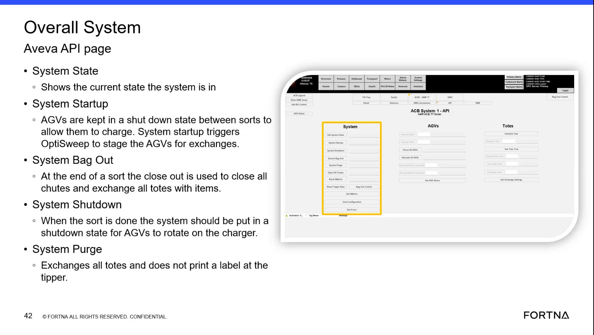
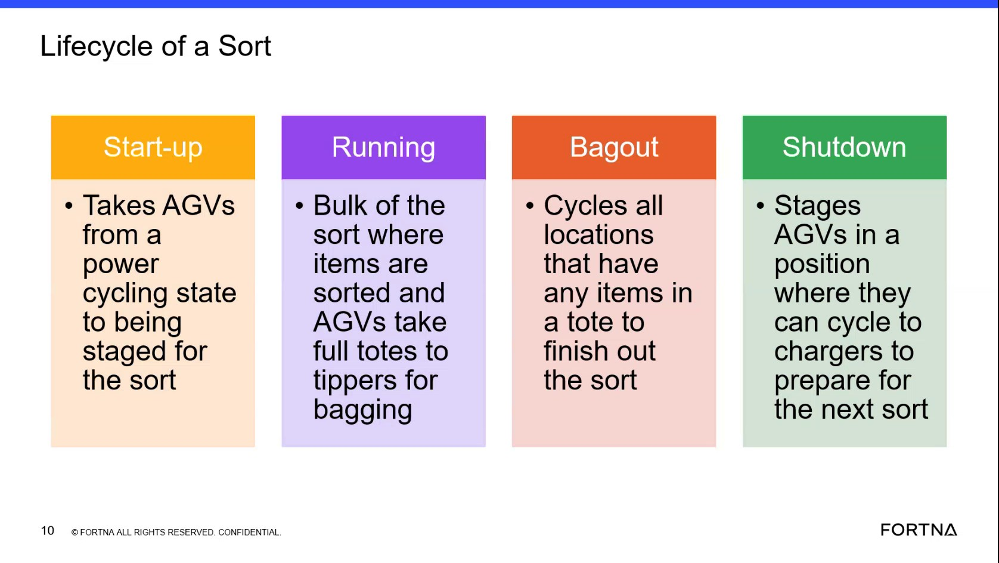

| Procedure ID | proc_place_the_system_into_shutdown_from_the_hmi_v1 |
|---|---|
| Title | Place the System into Shutdown from the HMI |
| Procedure Type | operation |
| Primary Role | operator |
| Support Safe | Yes |
| Validation Status | needs_sme_review |
| Merge Status | source_finalized |
The training states that after bag out the system returns to running, and that shutdown is a deliberate state the operator chooses from the Viva HMI when the next sort is not imminent.
Use when bag out has completed and the operator intends to place the system into shutdown rather than leave it in running state ready for another sort.
Responsible role: operator
Instruction:
Check the current system state and confirm that after bag out completion the system is in running state rather than assuming it is already in shutdown.
Expected result:
The operator confirms the system remains in running after bag out unless shutdown has been deliberately selected.
Screens / Images:

Stop or Escalate If:
Responsible role: operator
Instruction:
Use the Viva HMI to choose shutdown. The source supports that shutdown is something the operator chooses from the HMI, but it does not provide the exact screen path, button label, or confirmation sequence.
Expected result:
A deliberate shutdown request is made from the Viva HMI.
Screens / Images:
Stop or Escalate If:
Responsible role: operator
Instruction:
Verify that shutdown was intentionally entered rather than assumed to happen automatically after bag out.
Expected result:
The operator confirms shutdown is the result of an intentional HMI action.
Screens / Images:
Stop or Escalate If:
Responsible role: operator
Instruction:
Expect AGVs to go into shutdown logic and charging behavior after shutdown is chosen, consistent with the training description.
Expected result:
AGVs are associated with shutdown queues and charger rotation behavior consistent with shutdown state.
Screens / Images:

Stop or Escalate If: